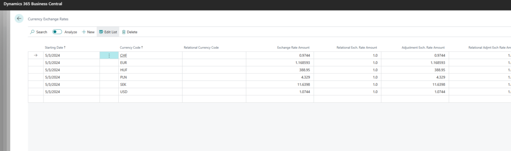

Business Central has a built-in currency exchange rate update mechanism that can fetch rates from the European Central Bank (ECB). However, there is a catch: ECB publishes all rates against EUR — meaning 1 EUR = X foreign currency. For companies operating in non-Euro countries (like the UK or Poland), the local currency is the LCY, and the rates need to be inverted. If you just import the ECB feed directly, your exchange rates will be upside-down.
The solution is to subscribe to the exchange rate import event and flip the relational exchange rate amount. Here is a codeunit that does exactly that:
codeunit 50106"ECB Currency Rate"
{
[EventSubscriber(ObjectType::Codeunit, Codeunit::"Exchange Rate Service", 'OnAfterMapExchangeRateData', '', false, false)]
local procedure OnAfterMapExchangeRateData(var TempExchRate: Record"Currency Exchange Rate" temporary)
var
RelationalExchRateAmt: Decimal;
begin
// ECB rates are EUR-based: 1 EUR = X foreign currency
// For non-EUR LCY we need to invert: 1 LCY = 1/X EUR
// Swap ExchangeRateAmount and RelationalExchRateAmount
if TempExchRate.FindSet() then
repeat
RelationalExchRateAmt := TempExchRate."Relational Exch. Rate Amount";
TempExchRate."Relational Exch. Rate Amount" := TempExchRate."Exchange Rate Amount";
TempExchRate."Exchange Rate Amount" := RelationalExchRateAmt;
TempExchRate.Modify();
until TempExchRate.Next() = 0;
end;
}The event OnAfterMapExchangeRateData fires after Business Central has parsed the ECB XML feed and mapped the raw values into the temporary exchange rate table. By swapping the two amount fields we effectively invert the rate — so instead of"1 EUR = 1.17 GBP" the system stores"1 GBP = 0.855 EUR", which is what a GBP-based company needs.
Configure the exchange rate service in Business Central under Currencies > Exchange Rate Services, point it at the ECB feed URL, and assign this codeunit as the data provider. Schedule it to run daily and your rates will stay current without any manual intervention.
